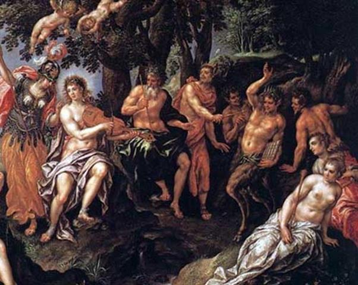

Các tiên nữ Nymphe và những người mục đồng rất say mê tiếng sáo Syrinx của Pan. Hôm nào, vì lẽ gì đó, tiếng sáo của Pan không cất lên là hôm ấy các Nymphe và những người mục đồng thấy bồn chồn trong dạ. Rừng núi như trống trải, lạnh lẽo hẳn đi. Tiếng sáo của Pan như linh hồn của rừng núi, như miếng bánh ăn và bình nước uống của những người mục đồng. Vì lẽ đó Pan rất tự hào về tài thổi sáo của mình. Và Pan nảy ra ý định mời Apollon tới để đua tài. Thần Apollon chấp nhận lời mời trân trọng đó. Cuộc thi tài diễn ra ở sườn núi Tmolos. Thần núi Tmolos được mời làm giám khảo cùng với nhà vua Midas, người nổi tiếng giàu có ở xứ Phrygie.
Pan biểu diễn trước. Tiếng sáo của Pan cất lên nghe dịu dàng êm ái như đưa hồn con người ta vào cõi mộng. Chỉ nghe tiếng sáo ấy người ta đã tưởng như thấy được cảnh những chàng mục đồng nằm dài trên bãi cỏ lơ đãng nhìn bầu trời xanh bên đàn súc vật đang gặm cỏ ngon lành, Pan biểu diễn xong, thần Apollon liền kế tiếp. Tiếng đàn cithare vang lên với biết bao âm điệu phong phú lạ thường. Đây là một khúc nhạc nghe như tiếng bước chân rầm rập của đoàn quân chiến thắng trở về. Rồi một khúc tiếp sau nghe nỉ non như lời người vợ giãi bày tâm sự với chồng sau bao năm xa cách... Cả thiên nhiên đắm chìm trong tiếng nhạc huyền diệu, kỳ tài của vị thần Apollon, người khơi nguồn cảm hứng nghệ thuật thần thánh cho các ca sĩ, thi nhân. Các nàng Nymphe say mê tiếng sáo của Pan đến là thế mà cũng phải lặng người đi trước tiếng đàn thần thánh của Apollon. Apollon biểu diễn xong, thần đưa tay lên ngực cúi chào thần núi Tmolos, vua Midas và những người đã lắng nghe tiếng nhạc của mình. Thần núi Tmolos bước ra đội lên đầu thần Apollon vòng lá nguyệt quế. Apollon đã thắng cuộc một cách xứng đáng. Các tiên nữ Nymphe cũng như những ai được chứng kiến cuộc thi tài này đều hoàn toàn tán thành quyết định sáng suốt của thần Núi. Nhưng đến lần vua Midas, vua lại không đội lên đầu thần Apollon vòng hoa nguyệt quế hay vòng lá trường xuân. Midas trao tặng vòng hoa chiến thắng cho thần Pan. Từ thần núi Tmolos cho đến các tiên nữ Nymphe đều sửng sốt ngạc nhiên trước phán quyết của Midas, một sự phán quyết lạ lùng và tỏ ra chẳng hiểu gì cả. Còn thần Apollon thì vô cùng tự ái và tức giận. Thần liền cầm lấy hai tai của Midas mà véo, mà xoắn rồi kéo dài ra. Và tai của Midas dài ra, cứ thế dài ra theo đà kéo của Apollon và trở thành một đôi tai lừa! Từ đó trở đi vua Midas có đôi tai như đôi tai lừa.

Pan thi tài với Apollon
Thần Pan bị thua cuộc mặt buồn thiu buồn thỉu, lững thững ra về sống với thế giới non xanh nước biếc, đồng cỏ rừng già của mình. Tuy nhiên không vì thế mà tiếng sáo của Pan kém hay đi. Nó vẫn làm xôn xao, náo nức trái tim các Nymphe và các chàng mục đồng.
***
Lại nói về vua Midas có đôi tai lừa. Thật là một chuyện vô cùng nhục nhã, xấu xa. Nhà vua chỉ còn cách cho may một chiếc mũ và cứ thế đội lù lù trên đầu ngày cũng như đêm, suốt quanh năm ngày tháng. Nhà vua tưởng rằng như vậy sẽ chẳng ai biết được cái sự thật tệ hại đó cả. Thế nhưng trên đời này những chuyện xấu xa thật khó mà che đậy được. Điều mà nhà vua tưởng bưng bít che đậy được lại vỡ lở ra. Người biết được chuyện này đầu tiên là bác thợ cạo thường cắt tóc, cạo râu cho nhà vua. Nhà vua dặn bác không được để lộ chuyện và dọa sẽ trừng phạt nặng bắt chịu mọi cực hình nếu điều nghiêm cấm không được tuân thủ. Bác thợ cạo đành ngậm tăm. Nhưng khổ nỗi cái sự thật nhà vua có đôi tai lừa cứ đè nặng trong trái tim bác, cứ canh cánh trong lòng, ấm ức bức bối trong dạ khiến bác cảm thấy không nói được sự thật đó ra thì không thể chịu được, không thể sống được. Và một bữa kia bác quyết định phải nói sự thật. Nhưng nói thế nào để không ai nghe thấy kẻo nguy hiểm đến tính mạng. Bác thợ cạo bèn đào một cái lỗ sâu xuống đất rồi ghé sát mồm vào hét lên cho hả nỗi ấm ức trong lòng: “Vua Midas có đôi tai lừa! Vua Midas có đôi tai lừa!” Xong việc bác thợ cạo lấp kín chiếc lỗ rồi về, nhẹ hẳn cả lòng cả dạ. Nhưng điều mà bác thợ cạo tưởng rằng nói xuống tận lòng đất thì vẫn giữ được bí mật cho nhà vua té ra cũng hỏng bét nốt, giống như chiếc mũ không che đậy nổi đôi tai lừa dài ngoằng của Midas. Gần chỗ bác nói có một bụi cây sậy. Tiếng nói của bác vào lòng đất bị rễ cây sậy nghe được, truyền lên. Thế là mỗi khi có một cơn gió thổi, những cây sậy lại lao xao kháo chuyện lại với nhau: “Vua Midas có đôi tai lừa! Vua Midas có đôi tai lừa!” Người đi đường, đi chợ đi búa nghe thấy lại về bàn tán, kháo chuyện lại với nhau. Và thế là chẳng mấy chốc khắp bàn dân thiên hạ đâu đâu cũng thấy người ta lưu truyền bình luận câu chuyện: “Vua Midas có đôi tai lừa! Vua Midas có đôi tai lừa! Chỉ được cái giàu nhưng dốt ơi là dốt; chỉ được cái làm vua nhưng ngu ơi là ngu, ngu như lừa!”
Ngày nay trong văn học thế giới có điển tích Tai vua Midas hoặc Tai lừa để chỉ sự ngu dốt, tương đương với Tai trâu trong văn học của chúng ta. Còn thành ngữ Bác thợ cạo của Midas chỉ một con người không kín chuyện hoặc mở rộng nghĩa chỉ cái nguyên nhân làm lộ một chuyện cần giữ kín, lại có thành ngữ Sự phán xét của Midas chỉ sự phán xét ngu xuẩn, chủ quan. Gắn với chuyện Midas hám vàng, người ta còn dùng Số phận Midas để chỉ những sự biến đổi thất thường, nay lên voi, mai xuống chó, nay triệu phú, mai trắng tay.